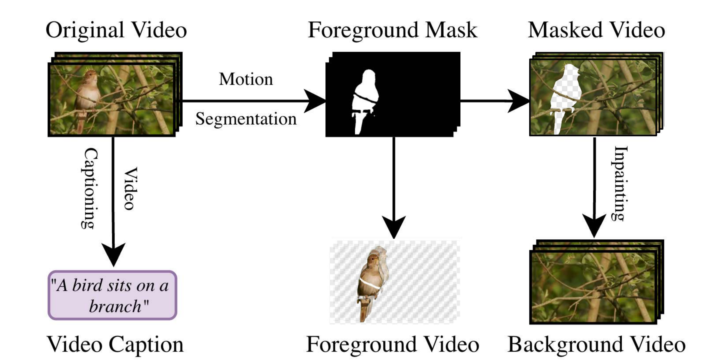

Method
Decomposer
Composer

The StM Decomposer integrates off-the-shelf models to split unlabeled videos. First, motion segmentation generates a foreground mask, which is used to extract the foreground layer. An inpainting model then fills the "holes" in the masked background video. During training, the Composer is trained to reconstruct a ground-truth video latent from foreground, background, and text inputs. A transformation-aware training pipeline and identity-preservation loss ensure the model avoids "copy-paste" shortcuts and learns genuine affordance.